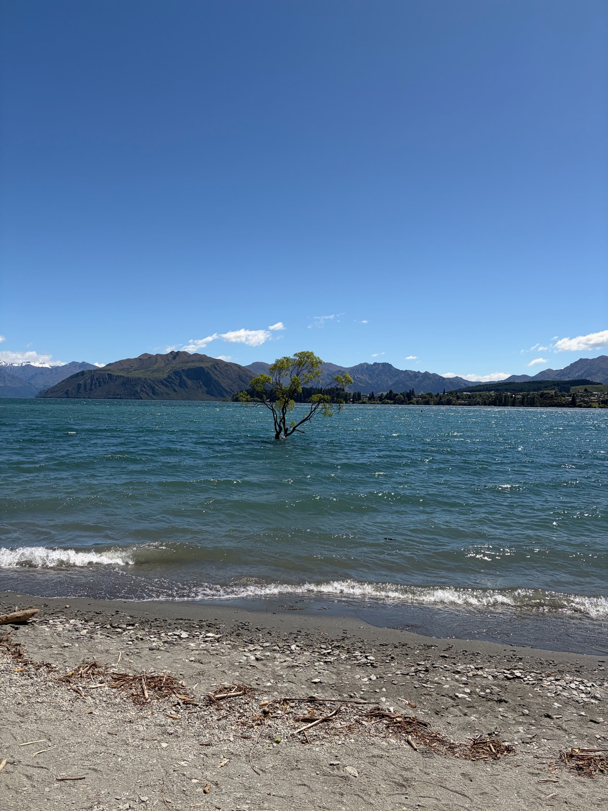
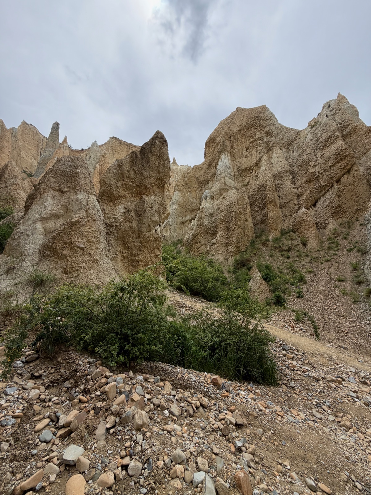

Right on the shores of Lake Wanaka with mountain views from every room. Wake up to ducks on the lawn and the Southern Alps reflecting in the lake. Walking distance to town along the waterfront path.
"I have coeliac disease"NZ uses UK spelling — widely understood
Grocery Stores
New World Wanaka — well-stocked free-from section with GF bread, pasta, and snacks
Soulfood Wanaka — health food shop with a dedicated GF grocery selection
Safe Cuisines
Steakhouses — naturally GF mains, just watch sauces
Cafes — NZ cafe culture is very GF-aware, most mark menus
Breweries — b.effect has dedicated GF beer on tap
Score Breakdown
Dedicated GF restaurants
Menu labeling
Staff knowledge & safety
Density of GF dining
Grocery availability
7/10Overall GF Score
Easy
GF Friendly Restaurants
14 spots
GF Score 5/5 3/5 Unrated Hotel
Relishes Cafe
GF Options
Cafe / Brunch
Went here
GF Score
Safety Notes
Lots of GF options on the menu including eggs benedict and calamari. Staff are familiar with GF requirements. Open breakfast and lunch only — 7:30am to 3pm.
What to Order
GF eggs benedict, calamari, and the daily specials. Good coffee and a relaxed lakeside-town atmosphere.
Italian restaurant in the heart of town. As with any Italian kitchen, communicate celiac needs clearly — pasta is the house specialty so cross-contamination risk exists.
100% dedicated gluten-free donut shop. Everything in the entire shop is GF — zero cross-contamination risk. A celiac dream. One of the only fully dedicated GF bakeries in the South Island.
What to Order
Everything! GF donuts in rotating flavors. Get there early — they sell out fast, especially on weekends.
Wanaka's most upscale dining option. Modern share-plate format with seasonal ingredients. Communicate celiac needs when booking — they can adapt dishes.
New Zealand's most photographed tree — a lone willow growing out of Lake Wanaka. Best at sunrise or sunset, but beautiful any time of day with the Southern Alps as a backdrop.
Lakefront · 5 min walk from town
Went here

Clay Cliffs
Nature
Dramatic pinnacle formations carved by millions of years of erosion near Omarama. Towering clay spires and narrow ravines that feel otherworldly. A $5 honesty box at the gate.
Omarama · 45 min drive from Wanaka
Went here

Things to Do
Hikes & Outdoor Activities
Roys Peak
Free
One of New Zealand's most iconic day hikes. A steep 16km return track climbing 1,250m to a panoramic summit overlooking Lake Wanaka and Mt Aspiring. Allow 5–6 hours return.
A stunning 10km return hike through ancient beech forest to a glacier viewpoint in the Matukituki Valley. Waterfalls, hanging glaciers, and dramatic mountain scenery. Allow 3–4 hours.
Wanaka town centre is tiny — everything is within a 10-minute walk along Ardmore Street and the lakefront.
Rental Car
Essential for the hikes and Clay Cliffs. Rob Roy track requires a gravel road — check your rental agreement for unsealed roads.
Pick up from Queenstown Airport
InterCity Bus
InterCity runs daily buses between Queenstown and Wanaka (1.5 hrs). Book online for the best fares.
intercity.co.nz
Bike
Several bike hire shops in town. The lakefront path is flat and scenic — great for a leisurely ride to That Wanaka Tree and beyond.
Nearest Airport
Queenstown Airport (ZQN) is the nearest commercial airport, about 1 hour's drive from Wanaka via the Crown Range Road — one of New Zealand's most scenic drives.
What to Pack
Late Spring / Summer in New Zealand
Comfortable hiking bootsEssential for Roys Peak and Rob Roy Glacier Track. Both tracks have uneven terrain.
Essential
Celiac travel cardA printed card explaining celiac disease in English. Helpful when communicating with kitchen staff.
Essential
Portable gluten-free snacksStock up at New World — you'll need trail snacks for the long hikes where no food is available.
Essential
Strong sunscreen (SPF 50+)The UV index in New Zealand is extreme — the ozone layer is thinner here. You will burn faster than you expect.
New Zealand
Layers for changeable weatherMountain weather shifts fast — mornings can be cool even in summer, and summit temperatures are much colder.
Wanaka
Reusable water bottleNo water sources on Roys Peak track. Tap water in Wanaka is excellent and safe to drink.
Wanaka
Compact rain jacketWeather can turn quickly in the mountains. Even in summer, afternoon showers are common.
Wanaka
Travel Tips
Wanaka is Queenstown's quieter, more laid-back neighbour. If you want the scenery without the tourist crowds, this is the place.
Sweet Spot NZ sells out early — get there in the morning for the best donut selection.
Roys Peak is closed during lambing season (1 Oct – 10 Nov). Check DOC website before planning your hike.
The drive from Queenstown via Crown Range Road is spectacular but steep and winding. Take it slow, especially in rain.
Stock up on GF supplies at New World before heading out for hikes — there's nothing once you're on the trail.
Clay Cliffs is a $5 honesty box. Bring coins or a $5 note — there's no card reader.
What I'd Do Differently
I wish I had been able to do the Rob Roy Glacier and Roys Peak hikes — the roads were flooded for Rob Roy and Roys Peak was trickier to get to without a car than I expected.
Have a tip or comment?
Found a great GF spot in Wanaka? I'd love to hear from you.